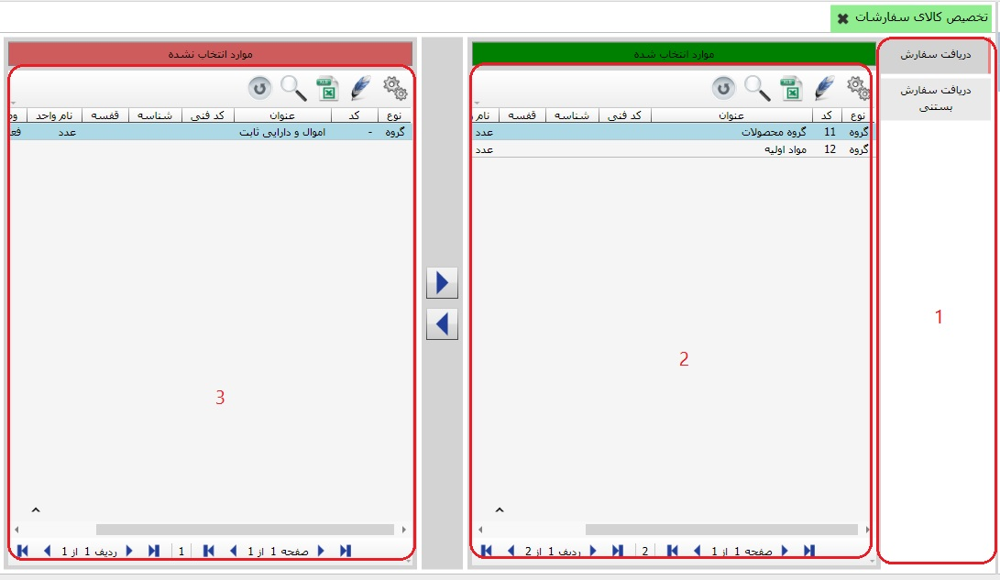

در این قسمت شما می توانید کالاها را به عملیات سفارشات اختصاص دهید. در فرم صدور سند سفارشات با انتخاب یک عملیات تنها می توانید برای کالاهایی سند صادر کنید که به عملیات مورد نظر تخصیص یافته باشد. توجه داشته باشید که شما هر تعداد کالا که مایل بودید می توانید به یک عملیات اختصاص دهید و هر کالا می تواند به چندین عملیات اختصاص یابد.
برای ورود به این قسمت کافی است از قسمت «اطلاعات پایه و عملیات» منوی «تخصیص کالا به عملیات سفارشات» را انتخاب کنید:
در قسمت مشخص شده با شماره 1 لیست عملیات سفارشات را مشاهده می کنید که عملیات تایید اولیه سفارش در حالت انتخاب قرار دارد. جدول شماره 2 گروه های کالایی که به این عملیات تخصیص یافته است را شامل می شود و جدول شماره 3 لیست گروه های کالای تخصیص نیافته به این عملیات را نشان می دهد. عملیات انتقال با دو فلش انجام می شود.